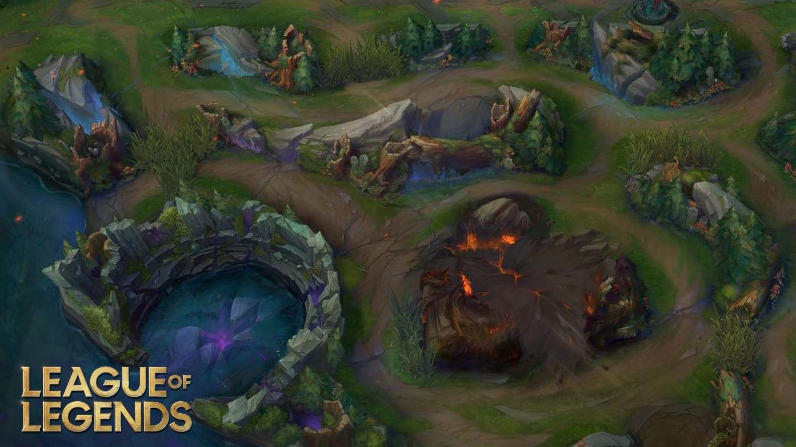

The Jungle
Monsters in the Jungle
The monsters in the jungle come in many shapes and sizes, from giant animal monsters to monsterous spirits made of wood and stone. These monsters reside between the lanes of the game and attack any champion that chooses to attack them. They will attack the champion till it dies or till it runs away out of the jungle.
Rewards
After a monster has been slain they give experience and gold before disappearing for a set time as the monsters respawn every 2 minutes. Killing some monsters may yield greater rewards than others, as some monsters in the jungle are a lot tougher.
List of Monsters
Gromp

- Health: 1650 − 2640 (based on level)
- Attack Damage: 80 − 253 (based on level)
- Range: 250
- Monster type: Large
- Trivia
- Gromp's full name is Lord Grompulus Kevin Ribbiton of Croaksworth.
Greater Murk Wolf

- Health: 1200 − 2200 (based on level)
- Attack Damage: 42 − 155 (based on level)
- Range: 175
- Monster type: Large
- Trivia
- The Murk Wolf camp is a replacement for the Wolf camp on Summoner's Rift since patch V4.20.
Raptors

- Health: 800 − 1760 (based on level)
- Attack Damage: 20 − 74 (based on level)
- Range: 300
- Monster type: Large
- Trivia
- A common nickname for the Raptors is chickens.
Blue Sentinal

- Health: 1800 − 3150 (based on level)
- Attack Damage: 82 − 303 (based on level)
- Range: 300
- Monster type: Large
- Trivia
- The Blue Sentinel will join Popstar Ahri if she dances in front of him
Red Brambleback

- Health: 1800 − 3150 (based on level)
- Attack Damage: 82 − 303 (based on level)
- Range: 300
- Monster type: Large
- Trivia
- Statistically speaking, it is nearly identical to the Lizard Elder.
Baron Nashor

- Health: 9000 (+ 180 per minute from match start)
- Attack Damage: 285 − 435 (based on game time)
- Range: 955
- Monster type: Colossal
- Trivia
- Nashor is an anagram for Roshan, being a tribute to the monster filling a similar role in Defense of the Ancients.